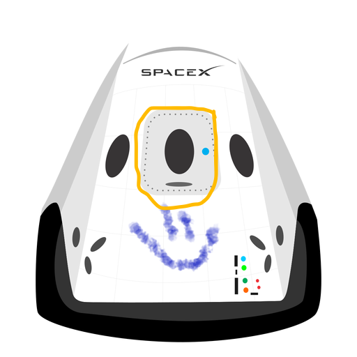

HyperBlog
El mejor Blog
Aquí inicia la historia de un gran proyecto
Y este es el párrafo de inicio donde vamos a explicar las cosas increíbles que se pueden hacer con ramas.

Los blogs son la mejor forma de compartir información y tus ideas. Mucho mas que ir a conferencias o salir en YouTube. Excepto si eres un rockstar. Pero estadísticamente no lo eres .... por ahora.
Suscritebe y dale like